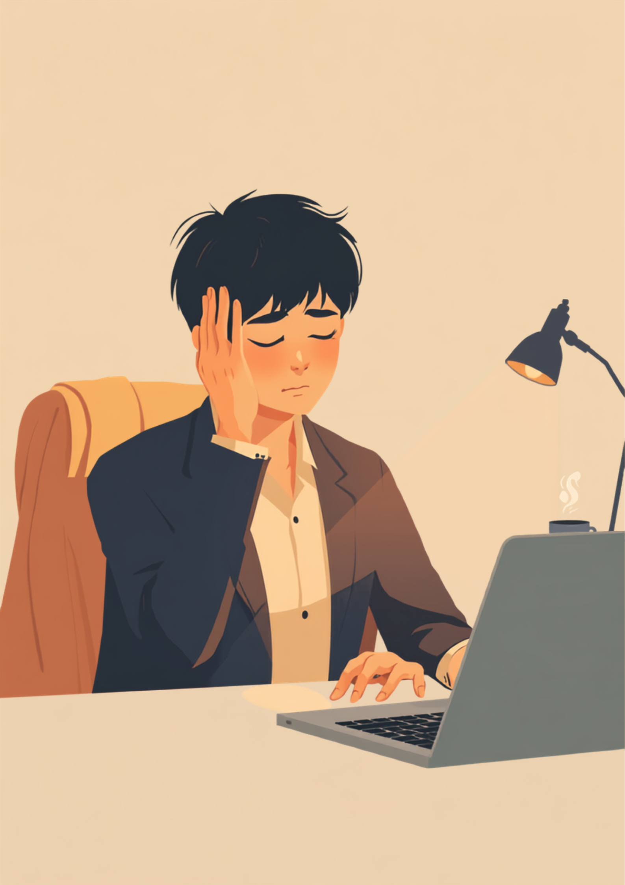
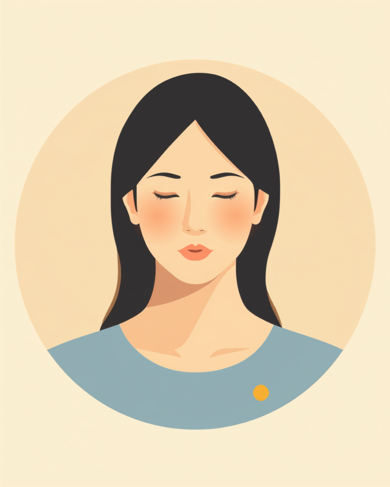

片頭痛は、脈打つようなズキズキとした痛みや吐き気を伴うことが多く、当事者にとっては仕事どころではないほどのしんどさがあります。それでも「頭痛くらいで休むの?」「気合が足りないんじゃない」と受け取られやすく、痛みを我慢したまま出勤してしまう方が少なくありません。この記事では、片頭痛のある方が仕事の中で抱えやすいしんどさと、光や音のトリガーへの対処、会議中の伝え方、頭痛薬の注意点、使える制度を当事者の声をもとに整理しました（2026年7月時点の情報です）。
PR



会議までまだ時間がある。それなのに、もうこめかみがズキズキしている
「頭痛くらいで」の一言に、黙ってしまう理由
片頭痛は「頭が痛いだけ」ではなく、脈打つような痛みに加えて吐き気や、光・音への過敏さを伴うことが多いとされています。集中して働くこと自体が難しくなる日もあるんです。ミミ
就労支援の現場で関わってきた中で、片頭痛のある方から何度も聞いてきた言葉があります。「頭痛くらいで休むなんて、って空気を感じるんです」というものです。片頭痛は日本でも珍しくない症状ですが、「誰でもたまに頭が痛くなる」という感覚と混同されやすく、当事者が抱えている痛みの強さや頻度が正しく伝わらないことがあります。
本人としては、脈打つ痛みで吐き気がある日でも、なんとか身支度をして出勤し、デスクに着いた頃には表情を取り繕っていることも多いようです。その結果、「普通に仕事してるし、大したことないんだろう」という周囲の印象と、本人の実際のつらさとの間に、大きなずれが生まれやすくなります。
!
片頭痛の症状の現れ方や頻度、強さには個人差があります。この記事で挙げる内容がそのまま当てはまるとは限らないため、症状が続く場合や強い痛みがある場合は自己判断せず、頭痛外来や神経内科など専門の医療機関に相談することをお勧めします。
「入社して3年目くらいから、月に3〜4回は片頭痛が出るようになりました。ひどい日は吐き気もあって、机に突っ伏したくなるくらいなんですけど、周りには『頭痛薬飲んどけば?』の一言で終わることが多くて。飲んでも効かないことがあるって説明しても、あまりピンと来てもらえないみたいで、途中からもう説明するのをやめました。」
20代・女性（片頭痛・IT企業エンジニア職）
相談の一コマ

相談者
会議中に、視界がギザギザ光って資料の文字が読めなくなることがあるんです。でも「早退したい」ってなかなか言い出せなくて。

ミミ
それは閃輝暗点(せんきあんてん)と呼ばれる、片頭痛の前兆のひとつかもしれません。そのサインが出ているときに無理を続けると、かえって症状が悪化しやすいと言われているんです。
相談者
知らなかったです…ただの目の疲れだと思って、いつも我慢してました。
ミミ
前兆のサインが分かれば、早めに動く準備もしやすくなります。次の章で、職場に潜むトリガーと、会議中にできる対処法を一緒に見ていきましょう。
光・音・匂い。職場に潜む片頭痛のトリガーと、我慢の積み重ね
片頭痛には、痛みが起きやすくなる「トリガー」と呼ばれる要因があるとされています。職場という環境そのものが、片頭痛のトリガーの宝庫だという声もよく聞きます。蛍光灯の光、通勤電車の揺れと外の日差し、同僚の香水、エアコンの音、締切前の緊張。ひとつひとつは小さな刺激でも、積み重なることで痛みのスイッチが入ってしまうことがあるようです。
i
片頭痛のトリガーには個人差があり、光や音、気圧の変化、睡眠不足、特定の食べ物など、人によって反応する要因は異なるとされています。自分にとってのトリガーが何かは、頭痛日記などで記録してみると気づきやすくなる場合があります。
この「トリガーの積み重ね」を自分でも把握していないと、なぜか午前中はまだ平気だったのに、午後になると急に痛みがひどくなる、という日が繰り返されることになります。我慢して働き続けた結果、夕方には吐き気まで出てしまい、結局早退せざるを得なくなる、という悪循環に陥りやすいようです。
「正直言うと、営業職で外回りが多いんですが、夏場の日差しがきつい日は高確率で片頭痛が来ます。半年くらい『気合いでなんとかする』を続けてたんですけど、ある日商談中に急に吐き気がこみ上げてきて、トイレに駆け込んだことがあって。さすがにそのときは上司も心配してくれたんですけど、あそこまでいかないと『本当につらいんだ』って伝わらないのかなって、ちょっと情けない気持ちになりました。」
30代・男性（片頭痛・営業職）
会議中に前兆が出たら。伝え方と対処法の実践
会議の真っ最中に痛みや前兆が出てしまったとき、多くの方が「途中で抜けていいのか」「大袈裟だと思われないか」と迷うようです。動くと痛みが強くなりやすいとも言われているため、無理に我慢して座り続けることが、必ずしも最善とは限りません。
会議中にできる対処の選択肢
- いったん静かな場所へ移動し、数分だけでも目を閉じて休む
- 可能であれば、その場は音声のみの参加に切り替えてもらう
- 資料をあとで共有してもらい、録画やメモで内容を追う
- 市販の鎮痛剤を持ち歩き、前兆の段階で早めに服用する（用法は必ず守る）
症状の全部を説明する必要はありません。「前兆が出たら数分席を外すことがある」など、業務に関わる場面だけ先に共有しておくと、いざというときに動きやすくなったという声をよく聞きます。ミミ
病名や検査結果まで詳しく伝える義務はありません。信頼できる上司やチームメンバーにだけ、業務に関わる範囲で先に共有しておく、という進め方をとっている方もいるようです。伝えるタイミングも、症状が落ち着いているときに、日常会話の延長のような形で伝える方が話しやすかった、という声もあります。
頭痛薬の使い方の注意点と、使える制度・相談先
頭痛薬の使いすぎには注意が必要
仕事を抜けられない場面では、市販の鎮痛剤を一時的に使うのもひとつの方法です。ただし、市販薬を頻繁に使い続けると、薬物乱用頭痛と呼ばれる、かえって頭痛を悪化させるタイプの頭痛を招く可能性があるとされています。月に何度も薬に頼っている、あるいは薬の効きが以前より悪くなってきたと感じる場合は、自己判断で使用を続けず、頭痛外来などの専門医療機関に相談することをお勧めします。
!
市販薬の使用量や頻度については、薬剤師や医師の指示に従ってください。この記事は医療的な診断や治療方針を示すものではありません。
障害者手帳・障害年金という選択肢
片頭痛は、身体障害者手帳の対象にはなりにくいとされていますが、症状の程度によっては障害年金の対象になるケースがあるとされています。仕事や日常生活に大きな支障が出ている場合は、該当する可能性がゼロとは言い切れないため、主治医や年金事務所、自治体の障害福祉窓口に確認してみることをお勧めします（2026年7月時点の情報です）。
相談できる窓口
- 頭痛外来・神経内科（症状の記録や治療方針の相談）
- 職場に選任されている産業医（50人以上の事業場に選任義務あり）
- 自治体の障害福祉窓口、年金事務所（障害年金の可能性の確認）
- 就労移行支援事業所（体調管理を含めた就労準備や職場との調整）
片頭痛の症状の現れ方や、必要な配慮の内容には個人差があります。この記事の内容がそのまま当てはまるとは限らないため、実際の判断は主治医・支援者・自治体の窓口とよく相談しながら進めることをお勧めします（2026年7月時点の情報です）。
「頭痛くらいで」という一言に、何度も黙ってしまった経験がある方は多いと思います。それでも、トリガーや前兆のサインを自分なりに把握し、具体的な場面に絞って伝えることは、決して大袈裟なことではありません。
よくある質問
Q. 片頭痛でも障害者手帳は取れますか？
片頭痛は、症状の程度によっては障害年金の対象になるケースがあるとされていますが、身体障害者手帳の対象にはなりにくいと言われています。該当するかどうかは診断内容や日常生活への影響によって異なるため、主治医や年金事務所、自治体の窓口にご確認ください（2026年7月時点の情報です）。
Q. 会議中に片頭痛の前兆が出たらどうすればいいですか？
閃輝暗点などの前兆が出ている段階で無理を続けると、症状が悪化しやすいとされています。可能であれば一旦席を外す、資料をあとで共有してもらうなど、早めに動ける準備をしておくと安心という声もあります。
Q. 市販の頭痛薬を毎日飲んでも大丈夫ですか？
市販の鎮痛剤を頻繁に使い続けると、薬物乱用頭痛と呼ばれる別のタイプの頭痛を招く可能性があるとされています。月に何度も薬に頼っている場合は、自己判断で使用を続けず、頭痛外来など専門の医療機関に相談することをお勧めします。
Q. 職場に「片頭痛持ち」だと伝えるべきか迷っています
必ず伝えなければならないわけではありません。ただ、光や音などの具体的なトリガーや、発作時に必要な対応を事前に共有しておくと、いざというときに動きやすくなったという声もあります。伝えるかどうか、どこまで伝えるかはご自身のペースで判断して大丈夫です。
Q. 片頭痛が理由で仕事を続けるのが難しいと感じたら？
一人で抱え込まず、まずは主治医や職場の産業医、就労移行支援機関などに相談してみることをお勧めします。働き方の調整や、場合によっては転職も含めて、一緒に選択肢を整理していくことができます。
この5点を頭に置いておくだけで、少し気持ちが軽くなるかもしれません
PR


一人で抱え込む前に、今の気持ちを話してみませんか
「まだ迷っている」段階でも大丈夫です。mimemimeの無料相談は、今の状況の整理から一緒に始められます。
無料で話してみる
おのざる
mimemime代表。就労支援の現場経験をもとに、障がいのある方の働く不安に寄り添う記事を執筆。